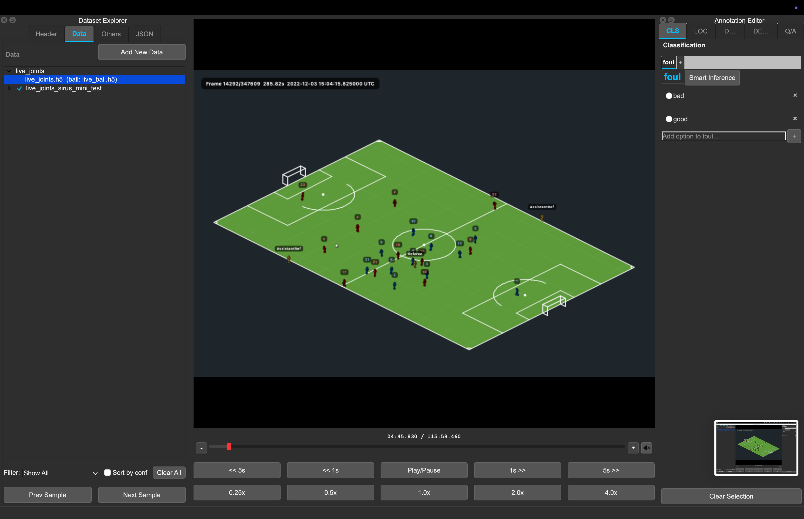
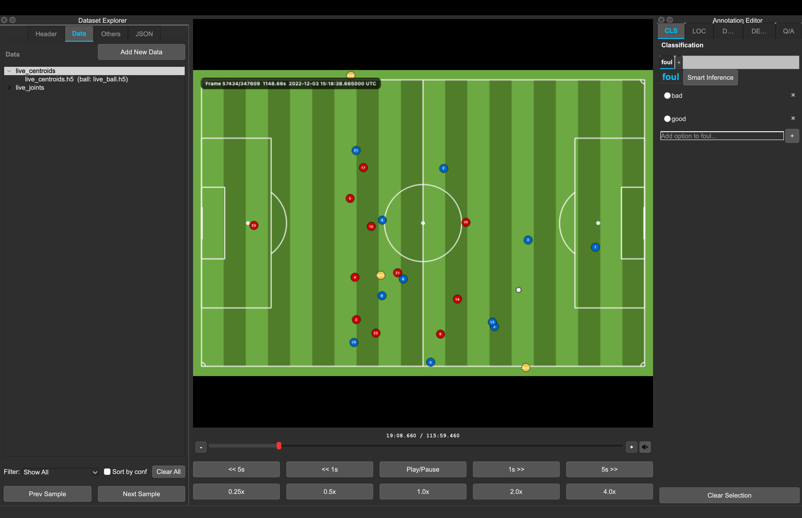

OSL JSON Format¶
This page describes the OSL-style JSON files loaded, edited, and written by the Video Annotation Tool.
An OSL JSON file is a single JSON object with dataset metadata, a label schema,
and a data array of samples. Each sample points to one or more media inputs and
can carry task-specific annotations.
Minimal Valid File¶
This is the smallest practical shape for a dataset with one video sample:
{
"version": "2.0",
"date": "2026-05-19",
"dataset_name": "minimal-demo",
"description": "",
"modalities": ["video"],
"metadata": {},
"labels": {},
"data": [
{
"id": "clip_0001",
"inputs": [
{
"type": "video",
"path": "clips/clip_0001.mp4"
}
]
}
]
}
Relative paths
Relative inputs[].path values are resolved from the folder that contains
the JSON file. If you move the JSON without moving its media folders,
playback can fail.
Common Mistakes¶
| Mistake | Result | Fix |
|---|---|---|
| Root JSON is an array | The app rejects the file. | Use one root object with a data array. |
data is missing or not a list |
The app rejects the file. | Set data to [] or a list of sample objects. |
Using top-level questions for Q/A |
Legacy question banks are dropped on save. | Store Q/A in each sample's grouped answers[]. |
Dense captions use start_ms/end_ms only |
The current dense editor expects point timestamps. | Use dense_captions[].position_ms and, when UTC is known, timestamp_utc. |
Annotation head names do not match root labels |
Controls may not show the expected labels. | Keep data[].labels keys and events[].head values aligned with root labels. |
| Relative media paths no longer point to files | Samples load but playback cannot find media. | Keep media beside the JSON or resave after correcting paths. |
Top-Level Object¶
The smallest useful file is a JSON object with data as a list. When loading,
the app fills missing standard fields with defaults. When saving, it writes the
standard project fields back out.
| Field | Type | Notes |
|---|---|---|
version |
string | Current app default is "2.0". |
date |
string | Usually an ISO date such as "2026-05-19". |
dataset_name |
string | Human-readable project name. |
description |
string | Free-text dataset description. Empty string is allowed. |
modalities |
array | Input types present in the dataset, for example ["video"]. The app recomputes this from sample inputs on save. |
metadata |
object | Dataset-level custom metadata. |
labels |
object | Label schema shared by classification and localization heads. |
data |
array | Sample list. This must be a list. |
hf_repo_id |
string | Optional Hugging Face dataset repository provenance. |
hf_branch |
string | Requested branch, tag, or revision. |
hf_split |
string | Remote split name. |
hf_format |
string | Remote format, json or parquet. |
hf_commit |
string | Resolved immutable commit for selective downloads. |
Unknown root keys are preserved, except retired legacy keys documented below.
Successful Hugging Face downloads write all five hf_* provenance fields.
Together they let the Dataset Explorer retrieve media later from the same
immutable repository state. Files created by older versions may contain only
repository, branch, and split; re-download those datasets before using
selective media actions.
Label Schema¶
The root labels object defines annotation heads. Each head name is a key, and
each definition should include:
type:single_labelormulti_label.labels: list of allowed label strings.
{
"labels": {
"action": {
"type": "single_label",
"labels": ["pass", "shot", "foul"]
},
"attributes": {
"type": "multi_label",
"labels": ["left_foot", "header", "set_piece"]
}
}
}
Classification and localization annotations should reference these same head
names. For example, data[].labels.action and data[].events[].head == "action"
both point at the root labels.action schema.
Sample Objects¶
Each entry in data is one sample.
| Field | Type | Notes |
|---|---|---|
id |
string | Stable sample ID. Missing or duplicate IDs are normalized on load/save. Duplicates receive suffixes such as __2. |
inputs |
array | Media or feature files for this sample. Multi-view samples use multiple input entries. |
metadata |
object | Optional sample-level metadata. Empty metadata is removed on save. |
labels |
object | Classification payload for this sample. |
events |
array | Timestamped localization events. |
captions |
array | Clip-level description captions. |
dense_captions |
array | Timestamped dense descriptions. |
answers |
array | Grouped question/answer annotations. |
Unknown sample keys are preserved.
Input Objects¶
Each sample should include inputs, even if the sample has only one media file.
{
"inputs": [
{
"type": "video",
"path": "clips/clip_0001.mp4",
"fps": 25.0,
"UTC_time_start": "2022-12-03 13:27:59.461000"
}
]
}
Supported input types:
| Type | Typical path | Notes |
|---|---|---|
video |
clips/clip_0001.mp4 |
Default when type is missing and the extension is not special. |
frames_npy |
frames/clip_0001.npy |
Uses fps for playback timing. The legacy alias frame_npy is normalized to frames_npy. |
tracking_parquet |
tracking/clip_0001.parquet |
Uses parquet timestamps when available. Optional fps is a fallback. |
player_joints_h5 |
tracking/live_joints.h5 |
Uses absolute UTC values from timestamp_utc for playback timing and renders a 3D stickman preview. Optional ball_path overlays ball XYZ from a separate H5 file. |
player_centroids_h5 |
tracking/live_centroids.h5 |
Uses absolute UTC values from timestamp_utc for playback timing and renders top-down player centroids. Optional ball_path overlays ball XYZ from a separate H5 file. |
UTC_time_start is optional for every input type and denotes the absolute UTC
instant at local playback position 00:00.000. It accepts ISO-compatible
timestamps with a space or T separator, optional fractional seconds, Z, or
an explicit timezone offset. Naive values are treated as UTC. A valid explicit
value overrides backend-derived timing, including H5 timestamp_utc. An empty
or malformed explicit value makes the input relative instead of falling back to
backend timing. The original field is preserved in project JSON unless it is
changed through synchronization or the viewer's Set/Correct/Remove UTC actions.
Point annotations in events[] and dense_captions[] may contain both
timestamp_utc and position_ms. A valid timestamp_utc is the authoritative
real-world instant; position_ms is a backward-compatible projection relative
to the currently resolved sample timeline origin:
Canonical annotation UTC is serialized as YYYY-MM-DD HH:MM:SS.ffffff. Input
may use ISO-compatible timestamps with T, Z, or timezone offsets; aware
values are normalized to UTC and naive values are interpreted as UTC. Samples
may freely mix absolute and legacy relative annotations.
New and edited annotations write both fields when a genuine UTC origin is
available. Save/export promotes legacy relative annotations and recomputes
compatibility positions where such an origin can be resolved. No synthetic UTC
origin is generated for relative-only samples. A malformed timestamp_utc is
preserved and falls back to position_ms; it is replaced with normalized UTC
only when the annotation is explicitly edited. Conflicting dual fields resolve
in favor of valid timestamp_utc. Absolute annotations are preserved even when
their projected positions are negative or beyond the available media duration.
In Localization and Dense Description tables, a resolvable annotation is shown
as YYYY-MM-DD HH:MM:SS.mmm UTC; otherwise it is shown as relative
MM:SS.mmm. Editing a UTC Time cell accepts the same ISO-compatible forms,
normalizes timestamp_utc, and derives position_ms. Table selection, timeline
markers, navigation, and media seeking always use the projected position_ms.
Input paths, including optional ball_path overlays, can be relative or absolute
when loading. On save, paths are rewritten relative to the saved JSON file
location when possible.
Optional ball overlay for player H5 inputs:
{
"type": "player_centroids_h5",
"path": "tracking/live_centroids.h5",
"ball_path": "tracking/live_ball.h5"
}
Player-joint H5 inputs use UTC timing from timestamp_utc, support the same
media controls as video inputs, and render 3D stickmen:
{
"type": "player_joints_h5",
"path": "tracking/live_joints.h5",
"ball_path": "tracking/live_ball.h5"
}

Player-centroid H5 inputs use UTC timing from timestamp_utc, support the same
media controls, and render a top-down field view:
{
"type": "player_centroids_h5",
"path": "tracking/live_centroids.h5",
"ball_path": "tracking/live_ball.h5"
}

Multi-view samples use more than one input:
{
"id": "play_0001",
"inputs": [
{"type": "video", "path": "wide/play_0001.mp4", "fps": 25.0},
{"type": "video", "path": "close/play_0001.mp4", "fps": 25.0}
]
}
Task Payloads¶
Classification¶
Sample-level labels uses the same head names defined at the root.
{
"labels": {
"action": {
"label": "shot"
},
"attributes": {
"labels": ["left_foot", "set_piece"]
}
}
}
Legacy project files may contain smart predictions whose head payload includes confidence_score as a float
from 0.0 to 1.0:
The loader remains compatible with this shape. New inference predictions are kept transient; accepting writes only the chosen label as a manual annotation.
Localization¶
Localization annotations live in events. Each event is a point annotation.
The first row below uses the preferred dual-field representation; the second is
a valid legacy relative row.
{
"events": [
{
"head": "action",
"label": "pass",
"position_ms": 1240,
"timestamp_utc": "2026-01-01 12:00:01.240000"
},
{
"head": "action",
"label": "shot",
"position_ms": 4320,
"confidence_score": 0.84
}
]
}
head should match a root label head. Smart localization predictions use the
same optional confidence_score convention as classification.
Description¶
Description annotations live in the ordered captions list. The Description
editor exposes variant, lang, and text; additional caption fields are
preserved. New rows default to English.
{
"captions": [
{
"lang": "en",
"text": "The player receives the pass and shoots.",
"variant": "auto"
},
{
"lang": "en",
"text": "[PLAYER] receives the pass and shoots.",
"variant": "clean"
},
{
"lang": "en",
"text": "[PLAYER] controls the pass before shooting.",
"variant": "refined"
}
]
}
Dense Description¶
Dense description annotations live in dense_captions. The current dense editor
uses point timestamps. The example intentionally mixes one preferred absolute
row with one supported legacy relative row.
{
"dense_captions": [
{
"position_ms": 1200,
"timestamp_utc": "2026-01-01 12:00:01.200000",
"lang": "en",
"text": "The midfielder receives the ball."
},
{
"position_ms": 4300,
"lang": "en",
"text": "The forward takes a shot."
}
]
}
Question/Answer¶
Q/A annotations live in grouped per-sample answers. Each group stores the
question text and one or more non-empty answers.
{
"answers": [
{
"question": "What happens after the pass?",
"answers": ["The receiving player shoots."]
}
]
}
Legacy top-level questions and per-answer question_id entries are not
persisted. Convert old VQA files with tools/convert_legacy_vqa_to_grouped.py.
While a generated answer is awaiting review, an answers[] entry may also be
an object:
{
"text": "The receiving player shoots.",
"confidence_score": 0.82,
"inference_model_id": "sports-vqa-v2"
}
The loader preserves manual strings and legacy smart answer objects. New Q/A,
caption, and dense-caption predictions remain transient until accepted. Legacy
smart captions and dense captions use the same optional confidence_score and
inference_model_id fields on their existing objects.
Complete Examples¶
Classification JSON¶
{
"version": "2.0",
"date": "2026-05-19",
"dataset_name": "soccer-classification-demo",
"description": "Clip-level action labels.",
"modalities": ["video"],
"metadata": {
"sport": "soccer",
"split": "train"
},
"labels": {
"action": {
"type": "single_label",
"labels": ["pass", "shot", "foul"]
},
"attributes": {
"type": "multi_label",
"labels": ["left_foot", "header", "set_piece"]
}
},
"data": [
{
"id": "clip_0001",
"inputs": [
{
"type": "video",
"path": "clips/clip_0001.mp4",
"fps": 25.0
}
],
"labels": {
"action": {
"label": "shot"
},
"attributes": {
"labels": ["left_foot"]
}
},
"metadata": {
"match_id": "match_01"
}
}
]
}
Localization and Dense Description JSON¶
{
"version": "2.0",
"date": "2026-05-19",
"dataset_name": "soccer-timeline-demo",
"description": "Timestamped events and dense captions.",
"modalities": ["video"],
"metadata": {},
"labels": {
"action": {
"type": "single_label",
"labels": ["pass", "shot", "save"]
}
},
"data": [
{
"id": "attack_0001",
"inputs": [
{
"type": "video",
"path": "clips/attack_0001.mp4",
"fps": 25.0,
"UTC_time_start": "2026-01-01 12:00:00.000000"
}
],
"events": [
{
"head": "action",
"label": "pass",
"position_ms": 1100,
"timestamp_utc": "2026-01-01 12:00:01.100000"
},
{
"head": "action",
"label": "shot",
"position_ms": 3650,
"timestamp_utc": "2026-01-01 12:00:03.650000"
}
],
"captions": [
{
"lang": "en",
"text": "A quick attack ends with a shot on goal."
}
],
"dense_captions": [
{
"position_ms": 1100,
"timestamp_utc": "2026-01-01 12:00:01.100000",
"lang": "en",
"text": "The midfielder plays a forward pass."
},
{
"position_ms": 3650,
"timestamp_utc": "2026-01-01 12:00:03.650000",
"lang": "en",
"text": "The striker shoots from inside the area."
}
]
}
]
}
Multi-Input Q/A JSON¶
{
"version": "2.0",
"date": "2026-05-19",
"dataset_name": "multi-view-qa-demo",
"description": "Two synchronized views with question/answer labels.",
"modalities": ["video"],
"metadata": {
"sport": "basketball"
},
"labels": {},
"data": [
{
"id": "possession_0001",
"inputs": [
{
"type": "video",
"path": "broadcast/possession_0001.mp4",
"fps": 30.0
},
{
"type": "video",
"path": "baseline/possession_0001.mp4",
"fps": 30.0
}
],
"answers": [
{
"question": "Which team ends the possession?",
"answers": ["The home team."]
},
{
"question": "How does the possession end?",
"answers": ["A made three-point shot."]
}
]
}
]
}
Save-Time Behavior¶
On save/export, the app:
- Ensures unique sample IDs.
- Normalizes input types, including
frame_npytoframes_npy. - Rewrites input paths relative to the output JSON location when possible.
- Recomputes
modalitiesfromdata[].inputs[]. - Removes empty optional sample fields such as
labels,events,captions,dense_captions,answers, andmetadata. - Normalizes Q/A answers to grouped
{"question": ..., "answers": [...]}entries with non-empty text. - Drops legacy top-level
questionsandquestion_idanswer entries. - Drops retired sample smart keys such as
smart_labelsandsmart_events. - Does not persist localization
label_colors; label colors live in app settings. - Preserves unknown root and sample fields where possible.